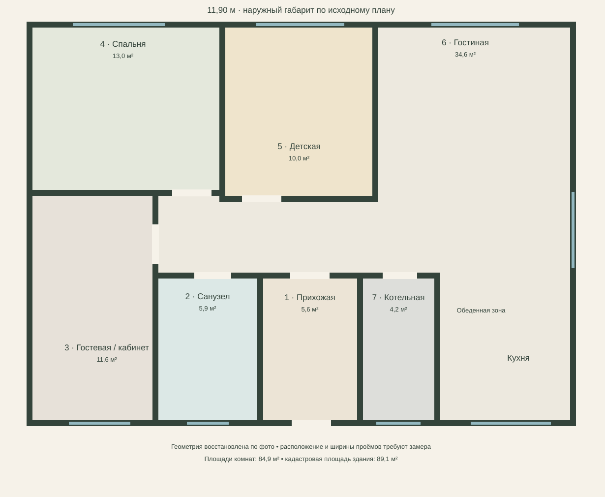

В работе · эскиз 0.1
Ксюша и Руслан
Светлый семейный дом для двоих взрослых и маленького исследователя. Тёплое дерево, мягкие оттенки и место для жизни.
Дом · 89,1 м² по кадаструПотолки 2,7 мБез перепланировки
Открыть проект ↗Планировки, цвета, материалы и бюджет.
Каждое решение — часть одного проекта.
 Ксюша и Руслан · первый эскиз ↗
Ксюша и Руслан · первый эскиз ↗Все решения и документы — внутри проекта.

Светлый семейный дом для двоих взрослых и маленького исследователя. Тёплое дерево, мягкие оттенки и место для жизни.
Образ жизни, исходный план, мебель и функциональные зоны.
Цветовая палитра, фактуры и визуализации помещений.
После обмеров — развёртки, привязки и ведомости.
От бюджетных лимитов к конкретным товарам и количествам.